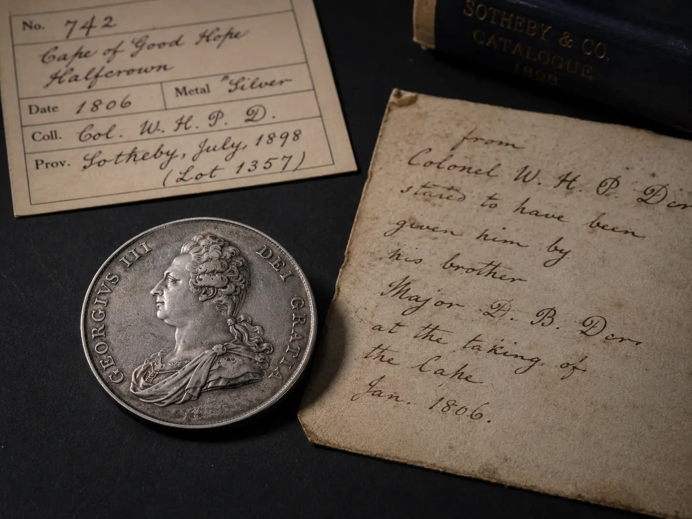
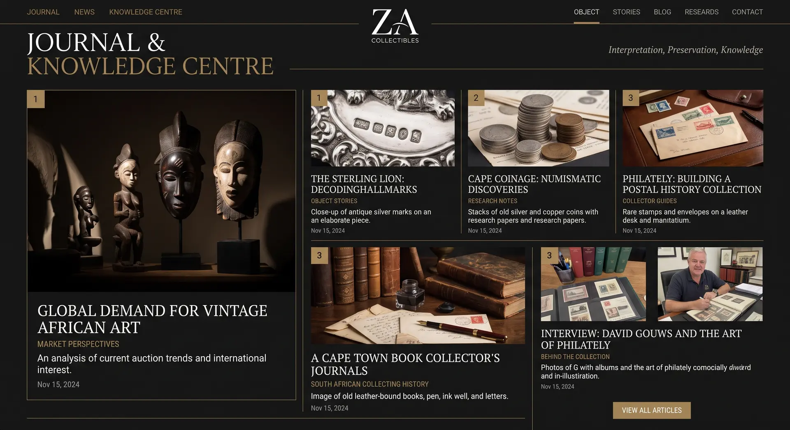

Numismatics
Why the Edge of a Coin Can Matter More Than Its Face
A practical field guide to plain, reeded, lettered and decorated edges, edge damage and the evidence a face-only photograph leaves behind.
Read article →Substantive guides, research notes and object-led essays on attribution, provenance, care, material evidence and the decisions that shape collections over time.


A practical field guide to plain, reeded, lettered and decorated edges, edge damage and the evidence a face-only photograph leaves behind.
Read article →
Why housing, labels, finding aids and digital records can preserve context as materially as a fitted case preserves the object.
Read article →
How ownership history, collection arrangement, tickets, inscriptions and documentary chains can alter confidence, meaning and marketability.
Read article →Each archive entry separates observation from interpretation, credits the public or open source material it draws on and routes the reader towards related objects, services and research. The archive is not a news feed. It is a compounding evidence base.